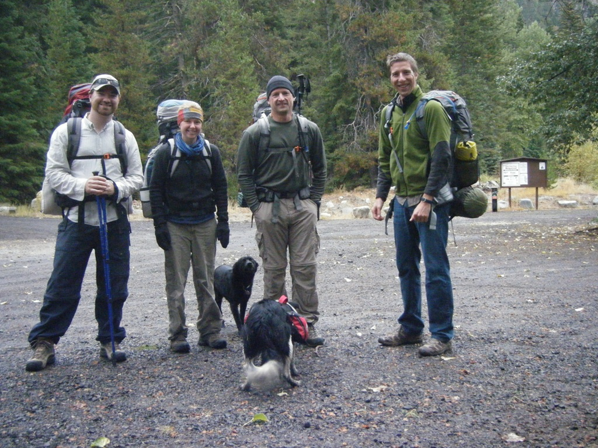
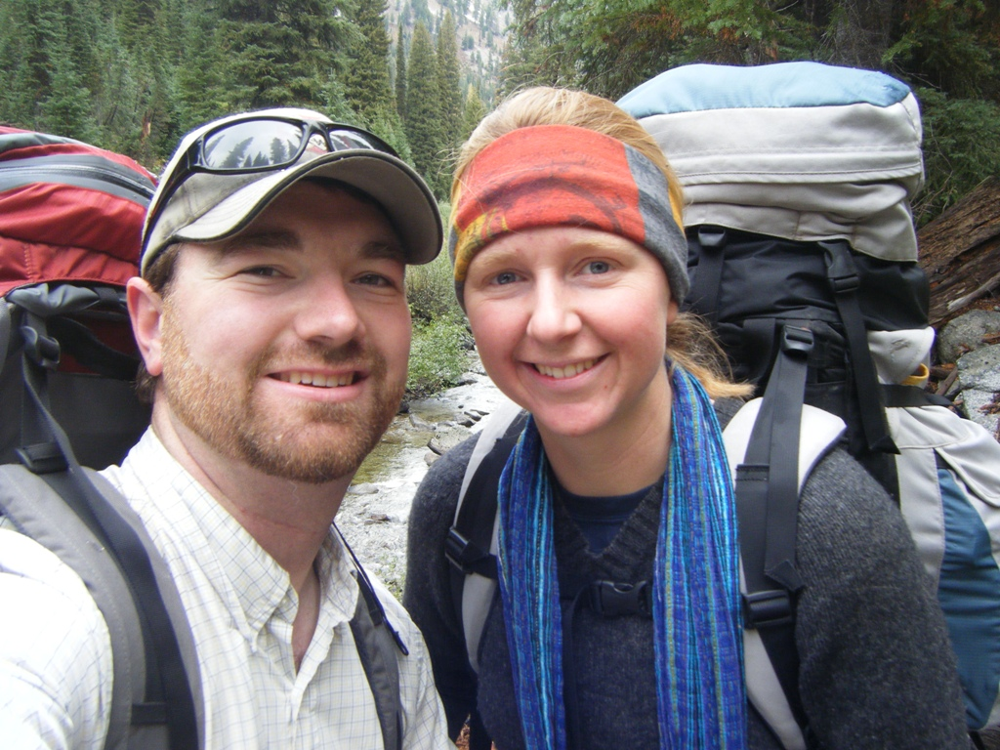
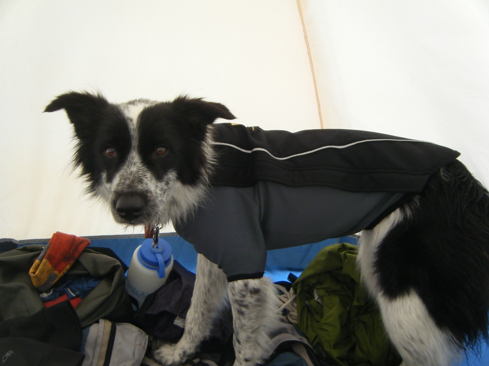
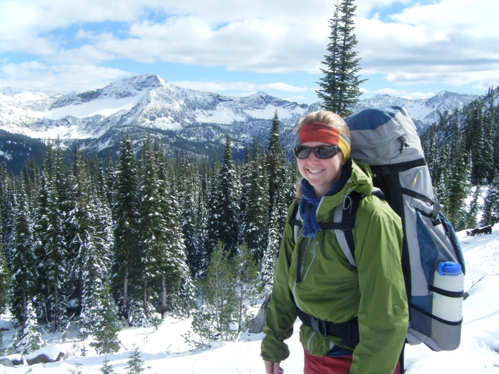

2011_10_Arrow Lake
Written by Steven - Friday, 14 October 2011 20:38
So, the story. Tara and I wanted to go for another trip into the Eagle Cap Wilderness area and as did my coworkers Will and Troy (Troy wanted to climb some peaks). After talking about it for a while we decided to go around Cached Lake Peak on a nice ~17 mile loop. The plan was to hike into Arrow Lake the first day and camp there (Troy wanted to climb a couple peaks that day as well). The second day would involve hiking over to Eagle Lake and camping there the following night (Troy would climb a couple peaks that day as well). And finally, hike back to the trailhead from Eagle Lake on Sunday morning (With Troy possibly picking up a peak on the way out).
The "plan" changed once we saw the
mountains. We spent Thursday night at a campground right at the
trailhead and it sprinkled and rained most of the night. Well,
that was snow up on the mountains. The trail up to Arrow Lake is
about 3 miles of slightly uphill hiking down in the valley and then
another 2.5-3 miles up a hill to the lake. Well about half way up
the "hill" we hit snow. From there the snow just kept getting
deeper and soon it started snowing on us. Well, we kept trucking
along and after 4-5 hours we made it to Arrow Lake...which has about
6-8 inches of snow around it. While I took a short nap, Troy,
Will and Tara climbed the peak right at Arrow Lake. After
everyone got back to camp we pretty much holed up in our tents for a
long night. Thankfully we had brought stuff for cold weather, but
we didn't bring the right gear for hiking around in 6 inches of
snow. The next morning we got up and had some breakfast and Troy
and Tara set off to climb another peak - Cached Lake Peak. Well,
they got within about 200' of the summit before the conditions made
them turn around. We then packed up camp and headed home instead
of continuing around the loop.
Even though our trip did not go as planned it was still a very fun trip and we had some spectacular views. Also, check our Troy's blog - he wrote about the trip as well.
|  |
 |
||
|  |
|||
|  |
{kind=link}
{kind=link}
{kind=link}
{kind=link}
{kind=link}
{kind=link}
{kind=link}
{kind=link}
{kind=link}
{kind=link}
{kind=link}
{kind=link}
{kind=link}
{kind=link}
{kind=link}